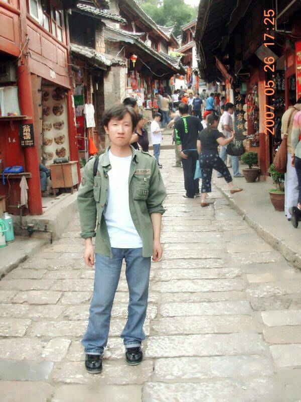

尘埃里的村庄

离开村庄的时候，天空下起了小雨，它洗去了空中漂浮的浮沉，让这里变得清新自然。树上的绿随着村庄四周的生命不停地燃烧，蒙蒙细雨中弥漫着一种难以释怀的自由和安详。就在这瞬间，匆匆离去的瞬间，我心中产生依恋，而依恋也仅仅在瞬间，便被踏向远方的足音震碎。
以为离开了村庄，就可以拥有广阔的世界，多少年以后，我找到了一片天空，但漫漫沙尘已悄悄地覆盖了我的冲动，没有冲动的世界，拥有的只是世故而不是单纯。我知道在心灵深处，村庄占有着不可替代的位置，虽然厚厚的尘埃，遮住了我回首的目光，可我相信即便自己什么都放弃了，也不会放弃那座属于我的破落城池。
离开的时候，以为从此村庄就不再属于自己了，以为轻轻地一挥便是那永久的别离，但是多年以后，才发现走得再远，永远走不出村庄的牵绊。忘却乡音，忘却了厚道与质朴，你还是你，骨子里注定的“土著”，你告别了村庄，却永远地将根埋在了那片黄土地里，跟着也便明白了一个道理，当乌鸡变成凤凰，就可以出现美丽的神话。
夏日里的村庄，铺满了黄土，烈日烤焦了黄土，黄土焙烧着我的自尊，耻于自己重负的尘土与生命的卑微，选择了离开哺育了自己的土地。走出了村庄就以为可以进入另外一个无尘的世界，我错了，这个世界不可能没有尘埃。行色匆匆中，蓦然发现了一个完全陌生的自己。言语开始絮絮叨叨，情绪开始愤世嫉俗，我仿佛开始穿越忧郁的峡谷，壁立千仞，对峙怒视，留给我的世界越来越小，留给我的天空越来越窄。一阵恐惧，从狭小的缝隙中钻出，向上蒸腾，穿过峡谷的风开始一层层揭去虚伪的表皮，忽然发现，没有了面具生命就没有了自卑，没有了自卑一切都会变得坦然。
在这个世界里，活明白和活坦然需要一个过程，看着别人活和与别人比着活，会出现同样一个结果，那就痛苦。脱离痛苦最好的办法就是，安静的走自己的路。自己的村庄属于自己，没有人可以成为你村庄的主人，你也不可能去到别人的村庄里喧宾夺主。情绪的发泄和愤世嫉俗又是为何？干扰别人和影响这个世界？没有必要也不可能做到。于是我又开始懂得逃离，这不是丢盔弃甲的逃离，而是胜利的逃离，我明白了，所谓希望，就是坚信一直走到峡谷尽头，天空必然豁然开朗；所谓绝望，就是看不到天空时的万念俱灰。生命每一天都在跋涉，灵魂也是，因为执著，所以一直没有放弃。走出了峡谷，果然看到了一片绿油油而无际的草原，看到了无数个生命在旺盛的生长，而此时忽然忘却了自己的孤独。我看到了爱，与自然共存之时幸福的爱，其实爱原本就依附于我们的躯体，出于自私我们害怕付出，而产生更多的却是怨恨与嫉妒，这也使我蒙尘的世界身陷其中的主要缘故。我明白原来爱与恨不仅仅能创造两个截然不同的世界，同样也能创造两个截然不同的心境。
我看到了村庄，在遥远的前方，那是自己的村庄，村头绿树成荫，周围庄稼郁郁葱葱，晴朗的天空里没有飘浮着尘埃。我注视着村庄，村庄无语的与我对望，顷刻之间我们完成了一次灵魂的交流，我看到了它的存在对我生命的重要性，它理解了我的背叛却给予了我更大的谅解和包容，我身心疲倦，热泪盈眶。多少年前我离开了，是怀着一颗幼稚而追梦的心；多少年后我回来了，是深深明白了，我必须要拥有那个属于自己的村庄。我会守着它，读书、放羊、沐浴阳光，守着那块土地与土地上的生命，在之后漫长的日子里看庄稼生生不息的疯长